776 BCE
Early Olympic Games in Olympia, Greece. Athletics competitions began as a cultural event.
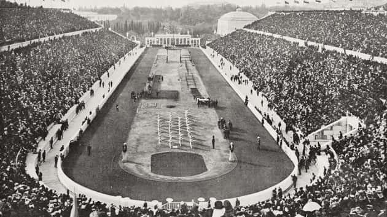A brief journey through time highlighting key moments in sports history.
Early Olympic Games in Olympia, Greece. Athletics competitions began as a cultural event.
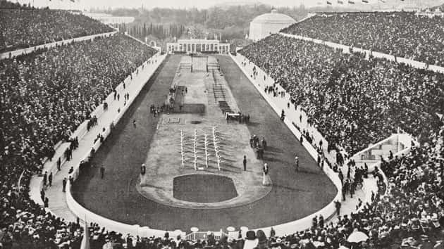Modern Olympics began in Athens, Greece. Sports officially revived worldwide.
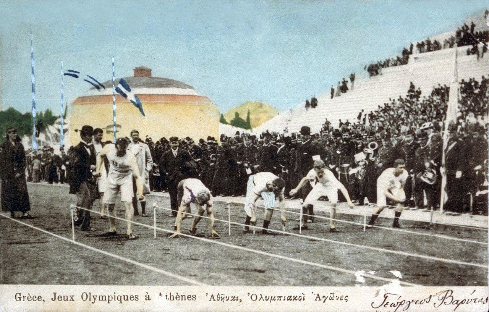World War I disrupted many sports events globally.
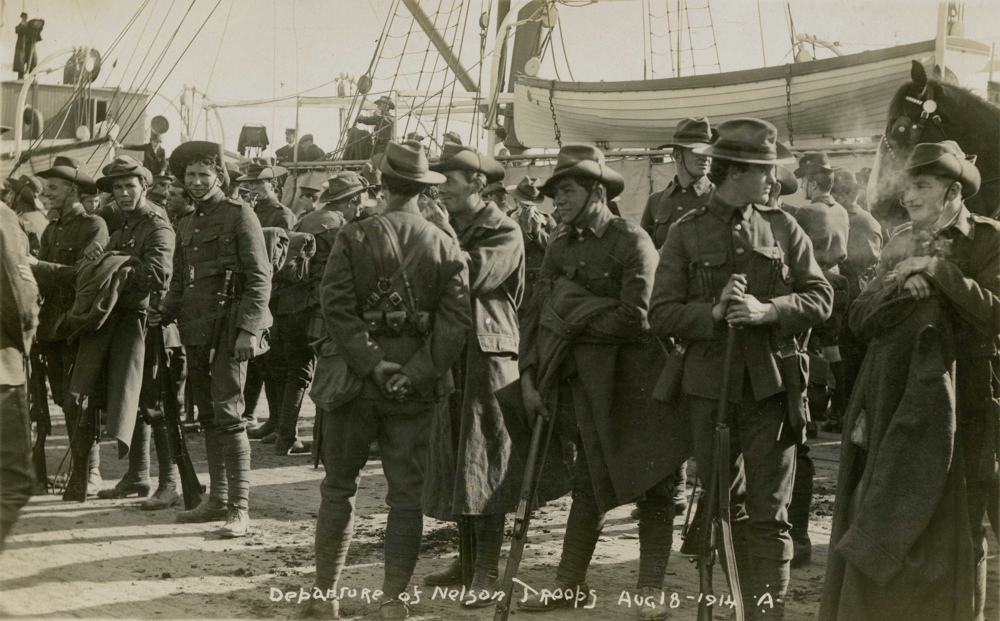First FIFA World Cup held in Uruguay, football gains worldwide attention.
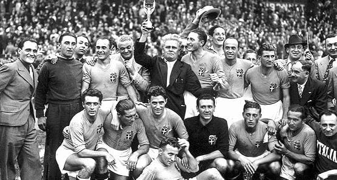World War II caused cancellations of many major sports tournaments.
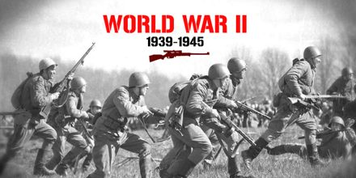Rome Olympics expand sports for women and promote global participation.
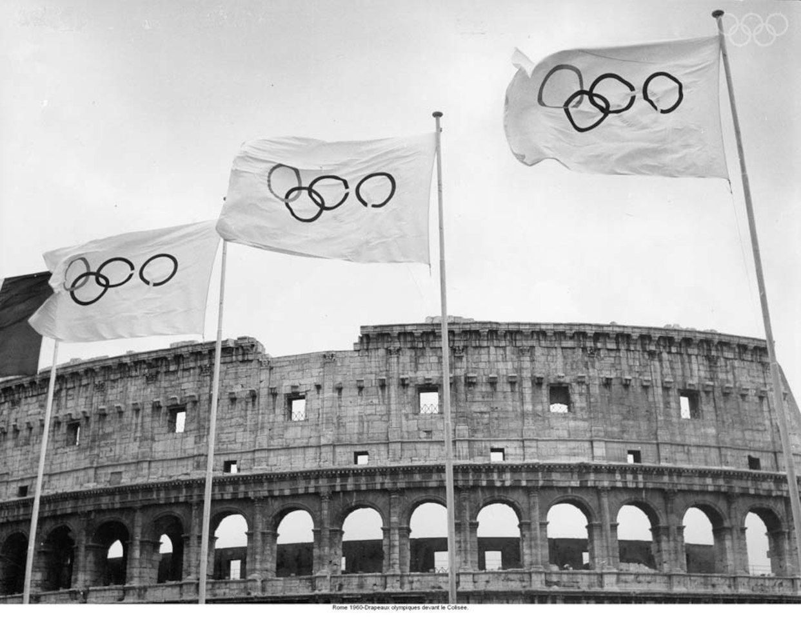FIFA World Cup and other sports gain global media attention.
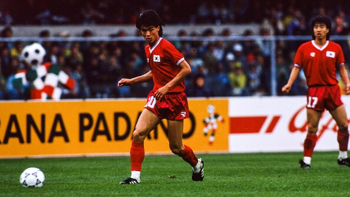Digital era begins: live streaming and global coverage of sports events.
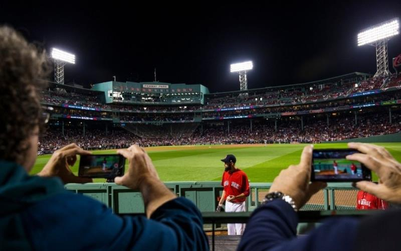Sports highlights on TikTok and Instagram Reels gain popularity.
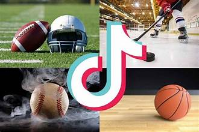COVID-19 pandemic pauses live sports; virtual competitions emerge worldwide.
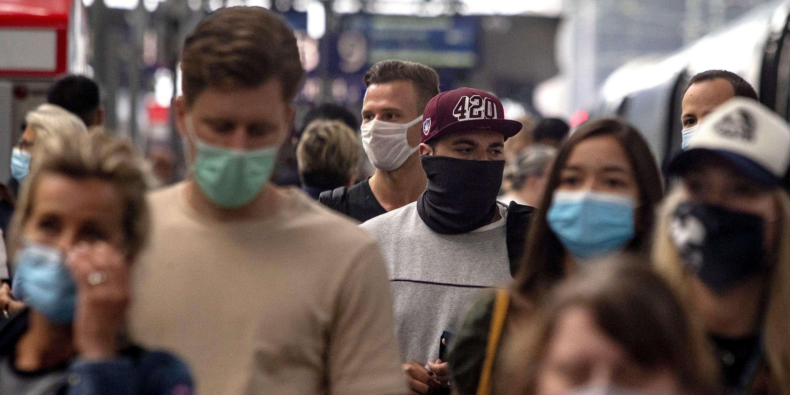